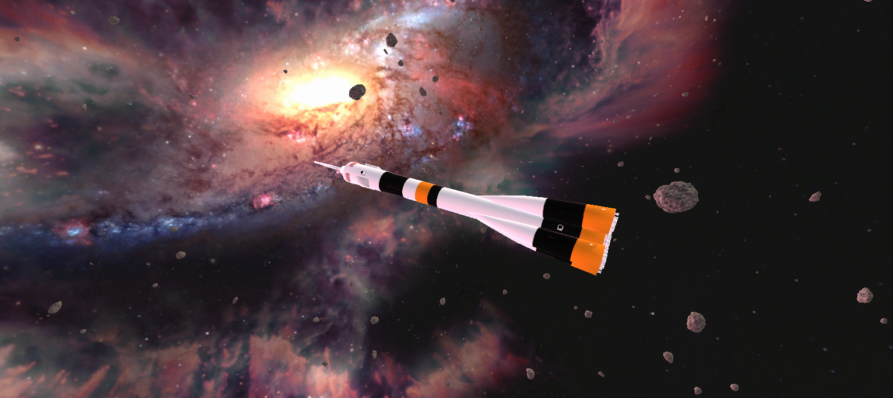

Daniel Sarin
Koodari, suunnittelija, muuta
Tuomas Leppälahti
Koodari, suunnittelija, muuta

Kuva projektista.
Projekti on Unityssä toteutettu peli, jossa pelaaja liikkuu avaruudessa. Projektin ideana oli luoda todenmukainen
nollapainovoimainen ympäristö, jossa pelaaja voi liikkua avaruusaluksella, mutta oikean maailman mukainen fysiikka
ei lopulta toteutettu sen vaikeuden ja luoman pelikokemuksen vuoksi.
Projektiin on saatu valmiiksi avaruusympäristö sekä asteroidien spawnaaminen ja liikkuminen ympäristössä. Lisäksi peliin
on implementoitu pelaajan liikkuminen eteenpäin ja taaksepäin W/S näppäimillä sekä kääntyminen käyttämällä A/D näppäimiä tai hiirtä.
Suurin osa projektiin käytetystä ajasta kului avaruusaluksen mallintamiseen.
Tässä kohdassa kuvataan projektin KESKEISET funktiot, eli lyhyt kuvaus keskeisistä funktioista. Jos kyseessä muu kuin ohjelmointitehtävä, kuvataan keskeiset työt.
Kuvataan kaikki keskeiset ongelmat, joita projektin aikana on ollut ja niiden ratkaisut. Muista, että kirjaat näitä ylös jo projektin aikana, sillä lopuksi saattaa tuntua siltä, että mitään ongelmia ei ollut. Jos löysit ratkaisuja kirjoista, niin maininnat niistä. Myös kirjoista, joihin tutustuit projektin aikana. Internet ratkaisusta laitetaan mahdollinen tuloste liitesivuksi. Internet-osoite on aina mainittava, kuten ohjeissa on kuvattu. Kaikki lähteet on siis mainittava.
Esitellään projektin/tehtävän keskeiset ruutukaappaukset ja mahdollisesti tilanteista ja laitteista otettuja valokuvia. Esimerkiksi joku ulkoinen laite jota ohjelmoidaan, niin kuva ja selostus myös tästä laitteesta (ominaisuudet). Tai muuta esimerkkiä projektin tuotoksista.
Mikäli ohjelmistolle/pelille on suoritettu testaukset, liitteenä pitää olla hyväksytyt testausdokumentit ja virheraportit (dokumentointiohjeet löytyvät Marko Orakselta). Muissa kuin ohjelmistoprojekteissa, yhteenveto mahdollisista palautteista yms
Tähän kohtaan liität gameplay videoita tuotteesta, ominaisuuksista ja omasta tekemisestä.